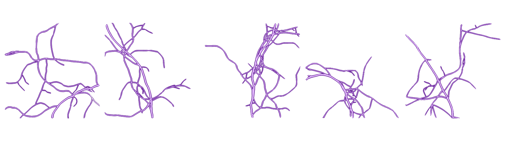

Modeling and Prediction of Tissue Oxygenation#
{kind=link}
Tissue oxygenation is a critical process dependent on the efficiency of gas exchange between blood capillaries and cells. This project aims to model these exchanges and predict oxygenation variations in tissue under various conditions.
Motivation#
The study of tissue oxygenation has significant applications in understanding and addressing metabolic activity in health and disease. This project is focused on creating computational tools for modeling these dynamics and predicting the impact of structural and functional variations in tissue.
Modeling#
The modeling of tissue oxygenation incorporates two main contributions:
Resistance to Gas Exchange: Simulation of barriers that restrict oxygen diffusion in specific tissue regions, here we choose to reduce it in the membrane areas of blod capillary.
Cells O2 consumption: Increased oxygen demand in areas representing metabolic activity.
Using these contributions, oxygen exchange is modeled through the following diffusion equation:
Where:
\(C(r)\) is the oxygen concentration.
\(D(r)\) is the diffusion coefficient (reduced in areas with capillary membrane resistance).
\(k(r)\) represents oxygen sinks (consumption by tissue cells).
To simulate the tissue oxygenation process, we employed a finite difference algorithm to solve the diffusion equation. Specifically, we tested both the Euler method and the 4th-order Runge-Kutta (RK4) method to discretize the spatial and temporal variables.

Results of a simulation#
In addition, spatial-temporal maps of oxygen concentration are used to train a neural network model. This model predicts oxygen concentration variations based on factors such as exchange resistance, inflammatory zone distribution, and the simulated tissue’s initial shape.
The modified UNet used#
We used a U-Net-based neural network for image processing with additional embedding input, to add the physics context to the prediction.
References#
Marc Chammas. “Imagerie optique speckle du débit sanguin cérébral : développement pour l’imagerie en temps réel en contexte clinique et préclinique”. Thesis, Université Paris-Saclay, September 2023. URL: https://pastel.hal.science/tel-04260896.
Adrien Lücker. “Computational Modeling of Oxygen Transport in the Microcirculation. From an Experiment-Based Model to Theoretical Analyses”. Doctoral Thesis, Zurich: SNF, 2017. DOI: 10.3929/ethz-b-000181551.
Hang Yu et al. “Convolutional neural networks for medical image analysis: State-of-the-art, comparisons, improvement and perspectives”. Neurocomputing 444 (2021), pp. 92–110. ISSN: 0925-2312. DOI: https://doi.org/10.1016/j.neucom.2020.04.157.
{kind=link}